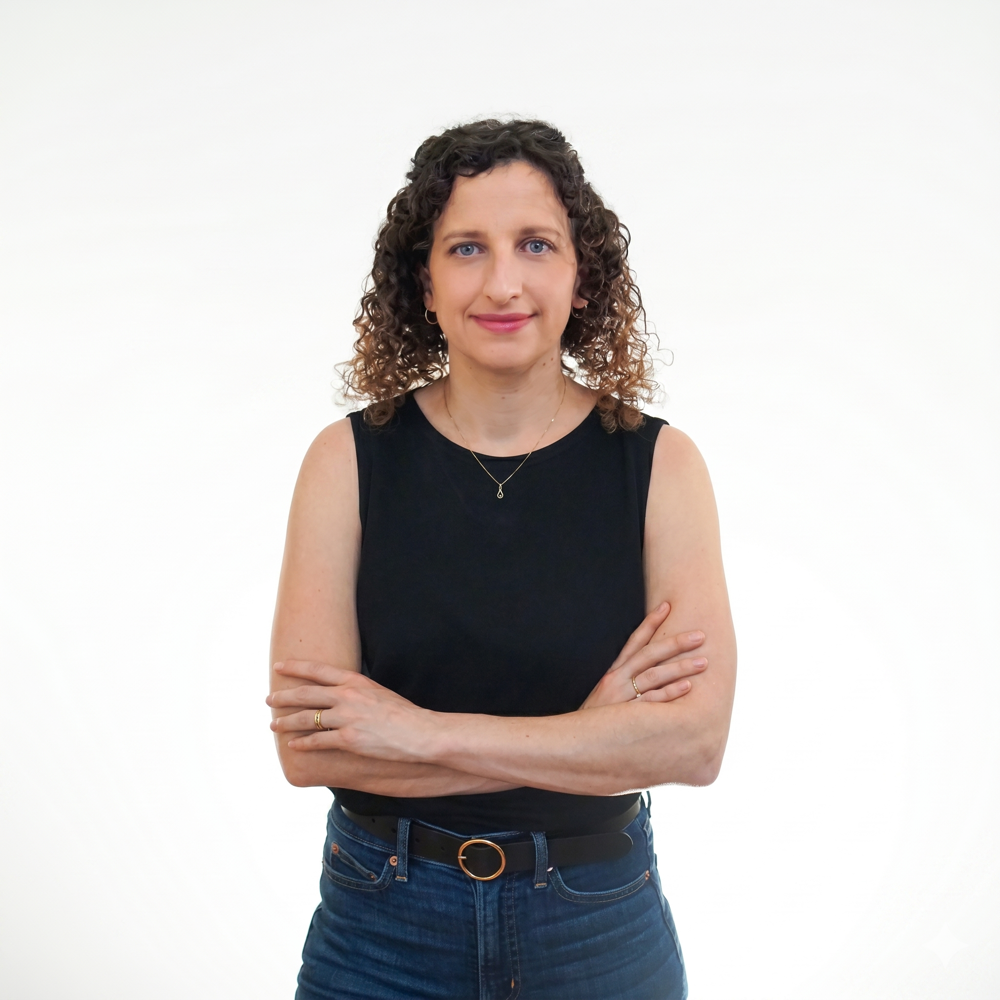
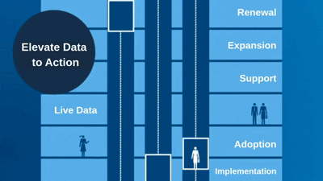
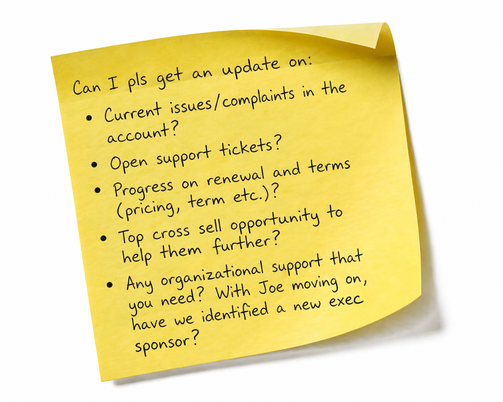
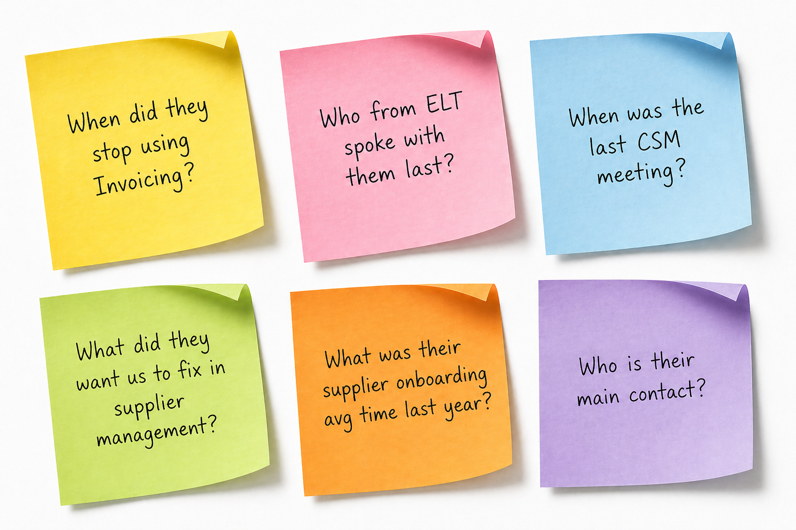
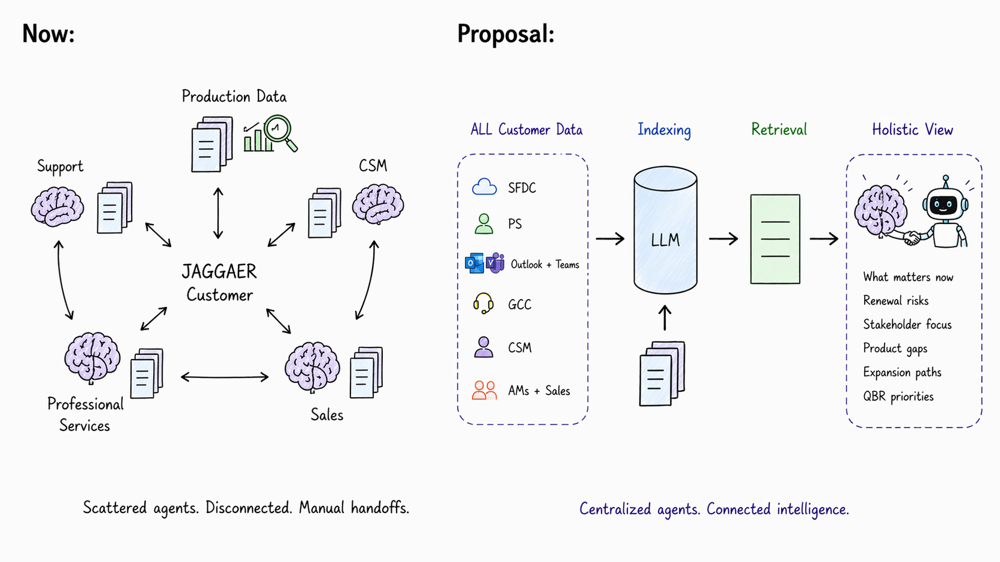
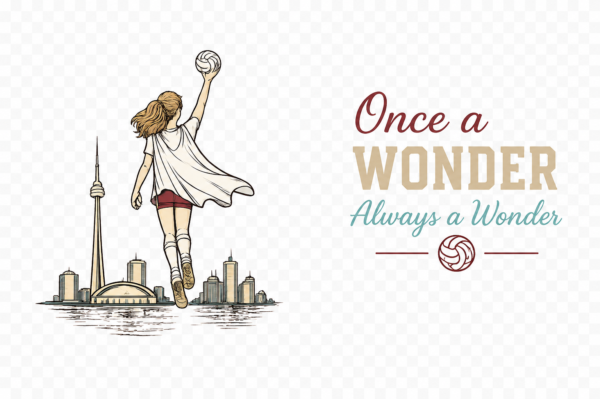
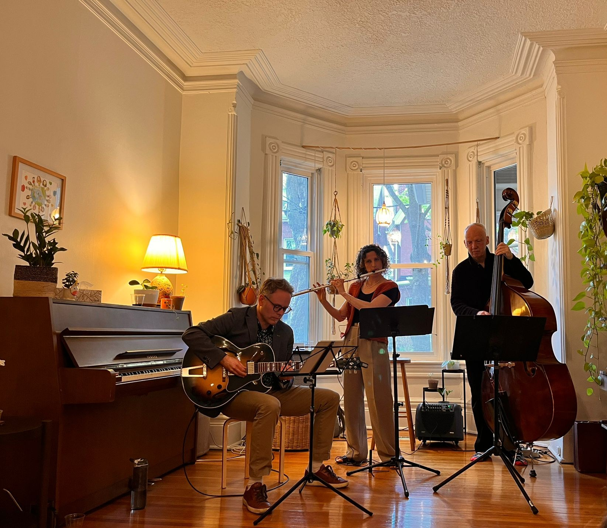

Turning enterprise AI strategy into production outcomes.
I build the tools, lead the teams, and ship the results.

Building. Leading. Repeat. AI Deployment Leader and Customer Execution Executive. I operate end to end: identifying the problem, building the solution, scaling adoption across the organization. From RAG pipelines to board decks, closing the gap between AI ambition and operating reality.
MA International Relations, Hebrew University. BA Music Education, Jerusalem Academy. Israeli, at home in Toronto.
CS AI roadmap presented to executive leadership, mapping interconnected tools, agents, and an orchestration layer across the full CSM lifecycle.
Designed and presented a CS AI roadmap to executive leadership. Board ready materials quantifying ROI and strategic trajectory, mapping interconnected tools, agents, and an orchestration layer across the full CSM lifecycle. Full scope initiative mapping AI opportunities from onboarding and health scoring to renewal intelligence. Included scenario planning, ROI modeling, and a phased implementation roadmap.

A RAG per customer app that brings data from one floor to the next. Moving CS past chat prompts into true task delegation. All enterprise data queryable in one place.



Built to answer one question: what data layer moves us past simple chat prompts into true full task delegation? CS teams waste immense energy manually pulling threads, emails, and tickets just to get a clear picture. Elevator fixes that. It's a RAG per customer app that brings data from one floor to the next. No stairs. Customer data plugs in and routes to the right floor. Salesforce, Snowflake, email threads, CSM notes, all queryable in one place. The question driving it: how do we make AI work for us, instead of working alongside AI?
Enterprise coverage model mapping headcount to ARR targets. Hired behind the curve while scaling from 6 to 16 CSMs, growing without outpacing revenue coverage.
Enterprise coverage and capacity model mapping headcount to ARR targets. Enabled us to hire behind the curve while scaling the CSM org from 6 to 16, growing intentionally without outpacing revenue coverage. Ground-up model connecting headcount, customer complexity, and ARR coverage goals. Translates operational CS data into strategic narrative for executive decision making.
Built a tool at Israel's Ministry of Foreign Affairs that automated research and reporting tasks, achieving a 75% reduction in manual work across a team of 3.
Research Assistant, Israel's Ministry of Foreign Affairs | Jerusalem | 2013–2016 Developed a tool to automate research and reporting tasks, reducing manual work by 75% across a team of 3. Supported policy analysis and global ambassadorial efforts across multiple departments. An early signal of what I'd keep doing: find the manual work, understand the system, build the fix.

I started playing catchball and built an app using AI for my coach. Saving her time on game setting and more.

Music and code come from the same place: a system with rules you learn to break. I trained in classical flute, played in orchestras, now improvise jazz. Making something out of structure is the only way I know how to work.